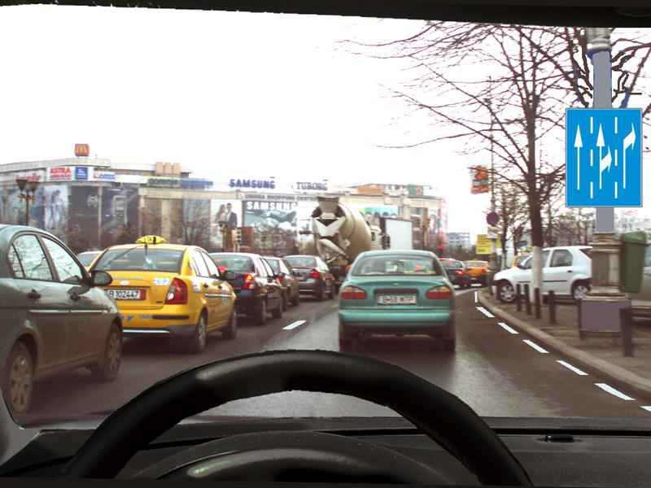

<!DOCTYPE html>
<html lang="en">
<head>
    <meta charset="UTF-8">
    <meta http-equiv="X-UA-Compatible" content="IE=edge">
    <meta name="viewport" content="width=device-width, initial-scale=1.0">

    <link rel="stylesheet" href="styles/global.css">
    <link rel="stylesheet" href="styles/navbar.css">
    <link rel="stylesheet" href="styles/question.css">

    <link rel="preconnect" href="https://fonts.googleapis.com">
    <link rel="preconnect" href="https://fonts.gstatic.com" crossorigin>
    <link href="https://fonts.googleapis.com/css2?family=Poppins:ital,wght@0,100;0,200;0,300;0,400;0,500;0,600;0,700;0,800;0,900;1,100;1,200;1,300;1,400;1,500;1,600;1,700;1,800;1,900&display=swap" rel="stylesheet">

    <title>Document</title>
</head>
<body>
    <nav id="navbar" class="navbar"></nav>

    <main>
        
        <div id="question" class="question">
            <!-- <h1 class="question__title" >Ce semnifică indicatorul?</h1>
            
        
            <form id="form" class="question__form" action="">
                <div>
                    <input type="checkbox" id="qA" name="qA" value="true">
                    <label for="qA"> circulația se desfășoară pe ambele benzi</label>
                </div>
                <div>
                    <input type="checkbox" id="qB" name="qB" value="true">
                    <label for="qB"> circulația se desfășoară pe ambele benzi</label>
                </div>
                <div>
                    <input type="checkbox" id="qC" name="qC" value="true">
                    <label for="qC"> selectarea circulaţiei pe direcţii de mers în apropierea unei intersecţii.</label>
                </div>
            </form>
            <button class="question__btn"> Submit </button> -->
        </div>

    </main>
    
    <script src="scripts/nav.js"></script>
    <script src="scripts/question.js" type="module"></script>
</body>
</html>